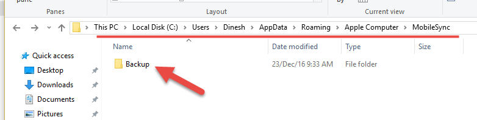

php-fpm
1.0 Install /Upgrade php-fpm
1.1 Config /etc/php/fpm-php7.2/fpm.d/www.conf
FILE: /etc/php/fpm-php7.2/fpm.d/www.conf
listen = /run/php-fpm.socket
listen.owner = nginx
listen.group = nginx
listen.mode = 0660
1.2 Adjust upload limited
FILE: /etc/php/fpm-php7.2/php.ini …
more ...
期货日内交易
- 5分钟交易图(观察此时在一分钟不ma5和ma10的相交)


- 盘被是怎么慢慢的不盘被的:均线平行区

- 黄金分割线

- 消息决定趋势后，跌破长期支撑线之后的特征


- 失误记录
- 30F明显向下趋势没有完成
- 5F形成中枢有中枢突破的可能
- 早盘第一个5F不能操作
- 在5F的第一个5F K线完成后，就可以看到前面中枢支撑的MA89均线被击穿，此时，走势方向就明确了。 *缠论、均线、形态三者综合判断
- 方向不明的横盘中持过夜仓，且没有利润的情况下持仓是不安全的。
Xetex/Latex/Xelatex
1.0 使用xelatex
1.1 模板
\documentclass{article}
\usepackage[textwidth=8cm]{geometry}
%解决中文自动换行的问题
\XeTeXlinebreaklocale "zh"
\XeTeXlinebreakskip = 0pt plus 1pt
% 新定义字体
\usepackage{fontspec} %加這個就可以設定字體
\setmainfont{WenQuanYi Zen Hei}
\usepackage{indentfirst} %首行缩进
% 文章内容
\title{超限战}
\author{作者：乔良 王湘穗}
\date{} %不要日期
\begin{document}
\maketitle
By clicking "Post Your Answer", you acknowledge that …趋势与趋势力度
- 趋势：包含两个中枢；盘整包含一个中枢；
- 趋势力度：快线(MA5)和慢线(MA10)交叉之后的形成的面积对比
- 没有趋势，不谈趋势力度，所以在横盘是的均线缠绕谈不上趋势，也就谈不上趋势力度；
- 日线图上出现的趋势力度，是次级别一下的趋势对比；

Samba
1.0 配置文件 smb.conf
FILE: /etc/samba/smb.conf
[global]
workgroup = home
server string = mini
server role = standalone server
hosts allow = 192.168.0. 192.168.1. 192.168.6. 127.
security = user
log file = /var/log/samba/log.%m
max log size = 50
interfaces = 192.168.0.199 …IRC/Weechat
1.0 Weechat
1.1 安装
- 目前Weechat所有的script都能支持python2, 官方加以暂时都编译为python2。
$ cat /etc/portage/package.use/weechat
net-irc/weechat python_single_target_python2_7 -python_single_target_python3_6
- OTR
(1) Install OTR
[ebuild N ] dev-python/pycrypto-2.6.1-r2 USE="gmp -doc -test" PYTHON_TARGETS="python2_7 python3_6 -python3_4 -python3_5"
[ebuild N ] dev-python/potr-1.0.1 PYTHON_TARGETS="python2_7 python3_6 -python3_4 -python3_5"
(2) 在weechat中安装 …
more ...Search Engine
-
pipl
Pipl是一款为搜索网络上的人物信息而生的搜索引擎。不同于传统意义上的搜索引擎，Pipl是专为检索“深网”上的信息而设计的。Pipl的爬虫能够与可搜索的数据库打交道，从中提取个人信息、联系方式、成员名录、科学出版物、法院记录以及其它很多“深网”内容。
Pipl目前提供五种方式搜索方式搜索特定人物：名字、Email地址、用户名、电话号码以及还处于BETA版的商业搜索。
Pipl所关注的不仅仅是找到更多的结果，它还通过高级语言分析和排名算法将与你搜索关键词最相关最匹配的结果以简单的单页形式展示给你。
-
My Life
MyLife是一个全面的成年人资料数据库，可以根据姓名、年龄、邮编等信息来查询你想要找的人。
MyLife的服务可以通过整合Twitter、Facebook、LinkedIn、Friendster和Flickr等社交网站的数据，帮助用户在互联网上找人。MyLife用户是免费注册，但如果要使用单身搜索、查看谁在搜索自己等高级功能，用户就需要付费。
MYLIFE网站还推出了一个全新的个人关系管理系统（PRM），是一个基于浏览器的服务，让用户在同一个内容流里就能看到Facebook、Twitter和LinkedIn的订阅源并进行答复、“赞”、转推等操作。
-
Yippy
Yippy是一个将多个搜索引擎信息结合在一起，然后得出统计结果的集成化搜索引擎。如果你想检索暗网的信息，Yippy便是一个不错的工具。暗网因其存储在专用网络而被屏蔽难以发现，而Yippy提供的搜索结果将帮助你发现不被传统搜索引擎检索到的隐藏网站 …
Opera
-
更改Opera的区域/更改缺省浏览器
- 在资源管理器的地址栏中键入%appData%在定位到”Roaming\Opera Software\Opera Stable”
- 找到文件 “Local State”
- 关闭opera浏览器
- 编辑 “country”:”CN”,”country_from_server”:”CN””, 把CN改为US
iTunes
-
Change iTunes Backup directory
-
Default backup directory 
-
Move to “J:\My iPhone Backup\Backup”, Just create a softlink
-
mklink /J “%APPDATA%\Apple Computer\MobileSync\Backup” “J:\My iPhone Backup\Backup”
Aria2
1.0 Linux 使用 aria
1.1 安装
0. manual: man aria2c
1. emerge net-misc/aria2
2. config file $HOME/.aria2/aria2.conf
1.2 配置 $HOME/.aria2/aria2.conf
FILE:$HOME/.aria2/aria2.conf
## 全局设置 ## ============================================================
# 下载位置, 默认: 当前启动位置
dir=/data/share/downloads/aria2
# 断点续传
continue=true
# 日志
#log-level …农大期货的课程模块

揭密：人工高频交易强手的实战攻心计
我对日内高频交易手法的定义是：根据市场行情盘口的变化，凭直觉尽可能多地捕捉交易机会，闪电交易，博取差价，积少成多，达到总体盈利稳定的目的。
日内高频注意三点：第一是直觉；第二是速度；第三，前两个手法的目的都是为博差价，而差价源于脉冲。
做交易眼里是容不得沙子的。我们的概念很简单，三秒定方向。三秒不朝我定的方向走，忍到八秒，再不对立刻砍掉，这就是高频的习惯。
交易中的节奏非常关键，做的过程中方向对了，节奏不好，照样亏损。这就是定义中的凭直觉，还有定义中说闪电交易博差价，既然三秒到五秒内没有差价可博，就立刻砍掉。
市场就是这样，你想它回来少输一点，它偏偏让你输大钱。所以我们要拒绝被动开仓、被动止盈；拒绝幻想，拒绝抗单。
在上涨和下跌途中，切记不要主观臆断。
记住沿着行情走的时候，千万不要去猜顶，要知道上涨是没有尽头的，跌是没有底的。
市场没有便宜货，便宜的都是陷阱。
操作中，禁止反趋势交易开反向仓，反向仓是蒙受巨大损失的病根。
交易中一定要牢记顺势果断开仓，顺势的中间是最安全的一段，这是做交易的一个精华 …
more ...iptables_public_server
1.0 iptable save
# Generated by iptables-save v1.4.21 on Wed Jan 6 11:02:46 2016
*filter
:INPUT DROP [42:2231]
:FORWARD ACCEPT [0:0]
:OUTPUT ACCEPT [1021:106069]
-A INPUT -p tcp -m tcp --dport 80 -m string --string "w00tw00t" --algo bm --to 60 -j DROP
-A …配镜
- 验光
DATE,用途,SPH,AXIS，P.D(瞳距) 2018/10/21,电脑工作,-3.00(R) -1.75(L),F1,68 2018/10/21,开车,-3.25(R) -2.00(L),F1,68
Economic Data
English words
- cast: The Iran sactions have officialy been cast.
- ratched up: In November they ratchet up to yet another level.
- do business
- pastor
- [‘pæstә] n. 牧师
- phonetic
- [fәu’netik] a. 语音的, 语音学的, 表示语音的, 语音差异的 【医】 语音的
- constender n. 参赛者, 争论者, 斗争者, 竞争者
- prevail: together we will prevail
- extradition
- maritime
- [‘mæritaim] a …
Linux 命令行字典
- Install
emerge -avq app-text/sdcv
To install a dictionary, first create the /usr/share/stardict/dic directory, if it does not exist. After that, unzip the dictionary file and copy that directory to /usr/share/stardict/dic You will need superuser privileges to do this.
-
manual
- list avaliable dicts
$sdcv …级别
1.0 概述
级别是最总要的《缠论》概念，由于原文描述不清晰，又经常以笔画中枢，导致对于级别的称呼和原文的称呼混乱，所以在读第三遍《缠论》时，再次总结，期望同意术语。
-
级别术语
-
中枢的级别
-
走势级别
走势级别是指我们看到的不同周期的走势图，如1分钟K线图，5分钟K线图，30分钟K线图等等。
-
走势类型的级别
- 走势类型中所包含的最大的中枢的级别。是自同构性结构自组（生长）出来的，本质上与时间无关，不是时间结构，所谓1、5、30等级别只是借用时间周期命名，也可也用家庭、街道、区县命名。
- 走势类型最小的级别，就是每笔成交构成的最低级的图形，然后不断按照走势中枢的延伸、扩展、扩张等的定义精确的确认各个级别，并不涉及5分钟、30分钟和日线等。
-
2.0 从级别角度分析中枢定义：
- 中枢原始定义：某级别走势类型中 ， 被至少三个连续次级别走势类型所重叠的部分 ， 称为缠中说禅走势中枢 。 换言之 ， 缠中说禅走 …
三买总结
1.0 第三类买卖点定理
一个次级别走势类型向上离开缠中说禅走势中枢然后以一个次级别走势类型回试其低点不跌破ZG则构成第三类买点；一个次级别走势类型向下离开缠中说禅走势中枢然后以一个次级别走势类型回抽其高点不升破ZD则构成第三类卖点。
2.0 三买形态特点
- 所谓某走势的三买，指的是其走势为一笔，其次级别为的这一笔就是一个线段，而这个三买是在次级别中a、b、c三笔中，a已经冲出刺激别的笔中枢，b回撤不进入此笔中枢，c又继续向上。而a、b、c组合为一个新的线段，这个线段在本级别就是一笔。
- 本级别macd黄白线不回零轴
- 次级别macd黄白线回零轴（出笔中枢后，笔回撤时），也有微微破零轴之后黄白线在零轴附近走平后再拉升，不出现破零轴之后的明显波动。
- 在次次级别上可以看到 MACD 破 0 轴 ， 后出现背驰 ， 这里可以找到最低点 。
3.0 三买的操作
3.1 形态总结
- 首先明确，三买一定是次级别回撤，在次次级别的第一类买点，而不是其他的级别；
- 操作的过程中会出现几种情况：
- 三买次低点成“一买”的情况；
- 很低的级别突破中枢，回撤的情况 …